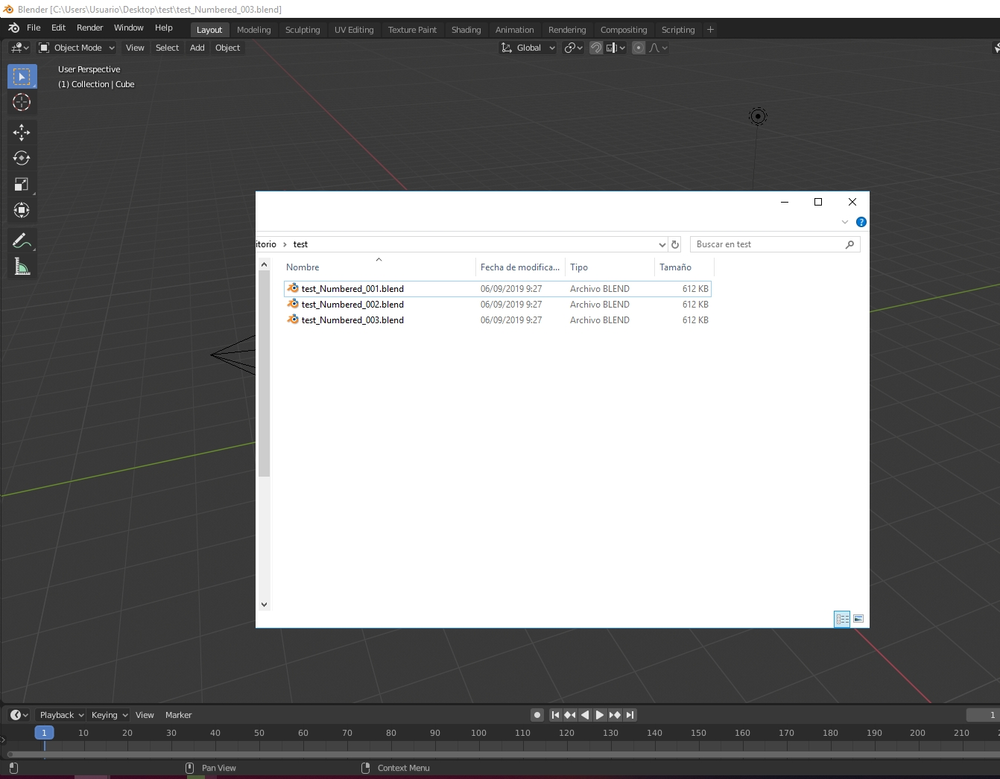
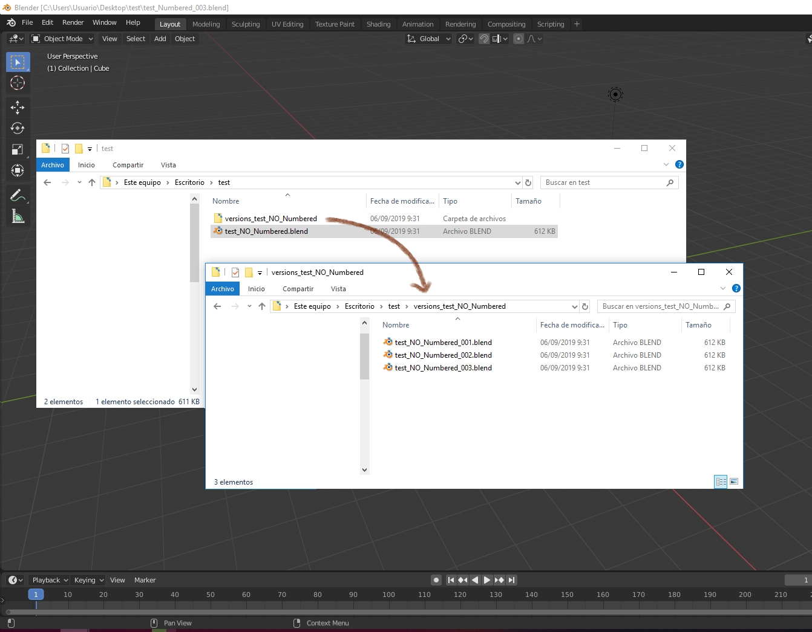

BLENDER ADDON : SAVE INCREMENTAL+
Created by Antonio Mendoza
1. Install vtools_saveIncremental.py. t will add a new entry in the File Top Menu

2. Add your desired shortcut

3. You can save using that shortcut.
3.1. If your file has any number at the end, it will save incremental and create the new file in the same folder.

3.2. In case you have a no-numbered file (ie: a master file) it will create a new folder for version storage and save either the master file and a incremental file within the folder.
